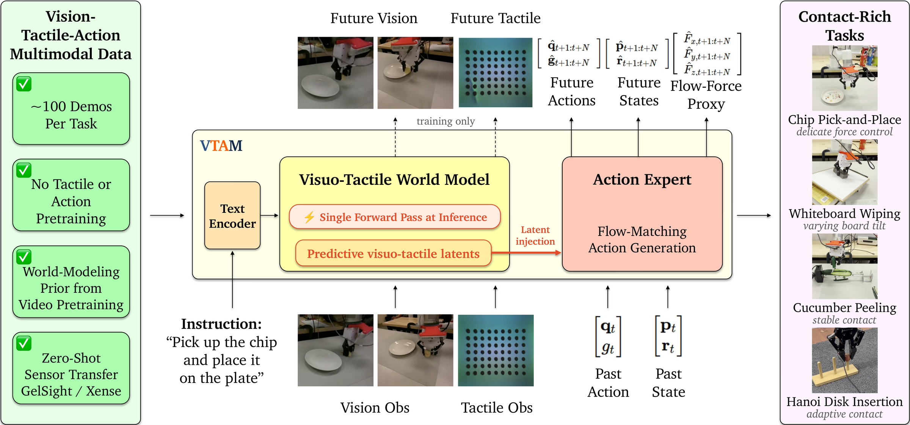
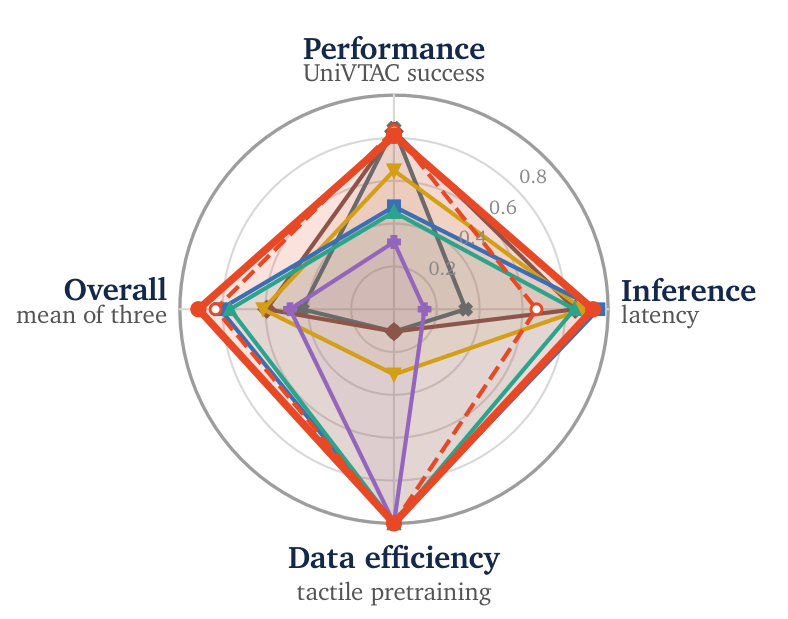

Chip Pick-and-Place
VTAM (Ours)
Genie Envisioner
pi0.5 (Vision)
pi0.5 + Tactile
VTAM turns a pretrained video world model into a visuo-tactile one: with ~100 demonstrations per task and no tactile or action pretraining, it learns to predict future vision and touch and reads those predictions in a single forward pass. It matches tactile models pretrained on over 30K hours of visuo-tactile data while staying fast at inference.
VTAM uses touch to guide precise contact during chip manipulation.
VTAM uses visual and tactile feedback to guide contact while peeling a cucumber.
Visual and tactile feedback guide sustained contact during wiping.
Tactile vision-language-action models (VLAs) and tactile world-action models (WAMs) are a promising new paradigm for contact-rich manipulation, but existing models either underutilize touch, rely on large-scale tactile pretraining, or incur high inference latency due to iterative video generation. We present VTAM, an efficient visuo-tactile world-action model for contact-rich manipulation that requires no tactile or action pretraining. RGB and tactile observations share a frozen video VAE and the pretrained video transformer weights. VTAM first adapts the video backbone to jointly predict future visual and tactile latents, then fine-tunes it end-to-end with a randomly initialized action expert that predicts actions, proprioceptive states, and a light flow-force proxy computed from tactile optical flow. Trained only on task demonstrations, VTAM outperforms all baselines on four real-robot tasks across two platforms with different tactile sensors, outperforms all baselines without tactile pretraining in average success on eight UniVTAC simulation tasks, and is comparable to tactile VLAs and WAMs pretrained on over 30K hours of largely visuo-tactile robot data (83.4% vs. 84.5% for N0-TWAM). Without full video denoising at inference, VTAM is approximately 6× and 16× faster than N0-TWAM and LingBot-VA without compilation, with compiled latency comparable to Fast-WAM. Ablations show that feeding frozen-VAE tactile features directly to the action expert, bypassing tactile world modeling, fails on every tested task, that Stage I visuo-tactile world-model fine-tuning improves UniVTAC success on most tasks, and that flow-force proxy keeps the policy from fully ignoring touch. The tactile encoder transfers zero-shot across GelSight Mini and Xense Photon sensors.
RGB and tactile observations share a frozen video VAE and the pretrained video transformer weights. A visuo-tactile world model predicts future visual and tactile latents; in a single forward pass at inference, its predictive latents are injected into a flow-matching action expert that generates actions without generating video.

Task-specific fine-tuning extends the pretrained video model to jointly predict future visual and tactile latents from about 100 demonstrations per task, without any tactile pretraining.
A randomly initialized flow-matching action expert, trained end-to-end with the backbone, predicts actions, proprioceptive states, and a light flow-force proxy computed from tactile optical flow, which keeps the policy from ignoring touch.
xArm6 with a GelSight Mini sensor. VTAM reaches 90%, 85%, and 95% on chip pick-and-place, cucumber peeling, and whiteboard wiping, outperforming every baseline on every task. Each model is evaluated over 80 trials.
| Model | Chip | Peel | Wipe | Avg. |
|---|---|---|---|---|
| Genie Envisioner | 0% | 0% | 2.5% | 0.8% |
| pi0.5 (Vision) | 10% | 0% | 0% | 3.3% |
| pi0.5 + Tactile | 5% | 0% | 0% | 1.7% |
| RDP | 0% | 0% | 50% | 16.7% |
| Tactile-VLA | 0% | 20% | 10% | 10.0% |
| VTAM (Ours) | 90% | 85% | 95% | 90.0% |
Flexiv Rizon 4 with a Xense Photon sensor instead of GelSight Mini; the frozen video VAE encodes the new sensor zero-shot. 20 trials per model.
| Model | Successes | Success Rate |
|---|---|---|
| Genie Envisioner | 1/20 | 5% |
| pi0.5 (Vision) | 5/20 | 25% |
| Tactile-VLA | 0/20 | 0% |
| FTP-1 | 11/20 | 55% |
| VTAM (Ours) | 15/20 | 75% |
Success rates (%) on eight UniVTAC tasks. † marks models with large-scale tactile pretraining (FTP-1: ~3K h; N0 models: >30K h). Without any tactile pretraining, VTAM outperforms all baselines without tactile pretraining on average and is comparable to N0-TWAM.
| Model | Lift Bottle | Pull-out Key | Lift Can | Put Bottle | Insert Hole | Insert Tube | Insert HDMI | Grasp Classify | Avg. |
|---|---|---|---|---|---|---|---|---|---|
| pi0.5 | 100 | 35 | 6 | 34 | 25 | 74 | 8 | 49 | 41.4 |
| LingBot-VA | 0 | 58 | 0 | 0 | 42 | 96 | 38 | 17 | 31.4 |
| Fast-WAM | 21 | 73 | 0 | 35 | 66 | 98 | 19 | 72 | 48.0 |
| ACT + UniVTAC | 71 | 46 | 29 | 31 | 24 | 56 | 28 | 99 | 48.0 |
| Tactile-VLA | 97 | 32 | 15 | 10 | 41 | 56 | 12 | 100 | 45.4 |
| Tactile-WAM | 5 | 20 | 10 | 45 | 20 | 85 | 0 | 55 | 30.0 |
| FTP-1 † | 97 | 48 | 65 | 47 | 64 | 79 | 18 | 100 | 64.8 |
| N0-VTLA † | 99 | 99 | 88 | 60 | 95 | 99 | 25 | 100 | 83.1 |
| N0-TWAM (20%) † | 51 | 25 | 80 | 46 | 78 | 96 | 52 | 95 | 65.4 |
| N0-TWAM † | 58 | 79 | 93 | 87 | 99 | 98 | 68 | 94 | 84.5 |
| VTAM (Ours) | 91 | 92 | 75 | 100 | 67 | 97 | 45 | 100 | 83.4 |
Latency per action chunk on one NVIDIA L40S (BF16, batch size 1); VTAM is averaged over its eight UniVTAC task models. Skipping full video denoising makes VTAM about 6× and 16× faster than N0-TWAM and LingBot-VA without compilation.
| Model | Params (B) | w/o full video denoising | Eager (ms) | Compiled (ms) | UniVTAC Avg. (%) |
|---|---|---|---|---|---|
| LingBot-VA | 11.47 | × | 9,380 | 10,404 | 31.4 |
| Fast-WAM | 12.41 | ✓ | 548 | 127 | 48.0 |
| Tactile-VLA | 3.39 | ✓ | 364 | 230 | 45.4 |
| FTP-1 | 3.66 | ✓ | 345 | 187 | 64.8 |
| N0-VTLA | 3.81 | ✓ | 335 | 225 | 83.1 |
| N0-TWAM | 13.59 | × | 3,393 | 5,136 | 84.5 |
| VTAM (Ours) | 7.29 | ✓ | 588 | 145 | 83.4 |
Outer is better; latency and tactile-pretraining axes are log-scaled, baselines use their fastest (eager or compiled) latency, and Overall averages the three normalized scores.

@article{vtam2026,
title={VTAM: Efficient Visuo-Tactile World-Action Models for Contact-Rich Manipulation without Tactile Pretraining},
author={Yuan, Haoran and Yi, Weigang and Zhang, Zhenyu and Chen, Wendi and Mo, Yuchen and Yin, Jiashi and Li, Xinzhuo and Luo, Yue and Li, Jialin and Zeng, Xiangyu and Wen, Chuan and Lu, Cewu and Driggs-Campbell, Katherine and Lourentzou, Ismini},
journal={arXiv preprint arXiv:2603.23481},
year={2026}
}